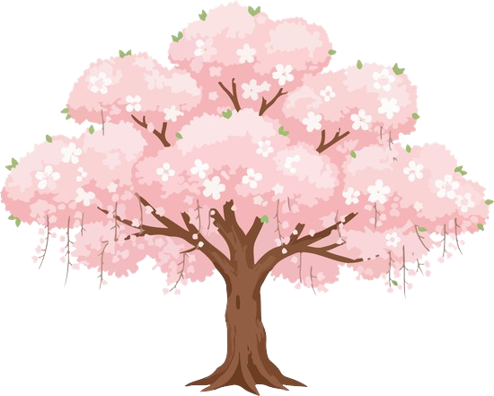
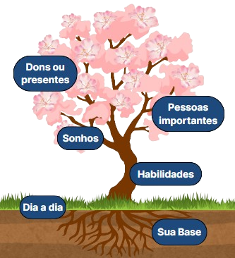

A Árvore da Vida é uma abordagem terapêutica criativa e baseada em forças, desenvolvida por Ncazelo Ncube e David Denborough, para ajudar indivíduos a reconstruírem suas histórias de vida.

A metodologia utiliza a metáfora de uma árvore para permitir que as pessoas expressem e se recordem das suas experiências de vida, focando em suas habilidades, esperanças e sonhos.
![Ilustração didática de uma árvore vista de perfil, com suas partes identificadas por legendas. A árvore tem um tronco marrom central, do qual saem vários galhos. No topo, há uma copa cheia de folhas e flores rosadas, semelhantes a flores de cerejeira. As flores aparecem agrupadas nos galhos, formando uma copa arredondada.
Cada parte da árvore está destacada com um rótulo em fundo vermelho e texto branco: “Flores” próximo às flores no topo, “Copa/folhas” indicando a região da copa, “Galhos” apontando para as ramificações, “Tronco” no corpo principal da árvore, “Solo” na camada de terra acima do chão e “Raízes” abaixo do solo.
A parte inferior da imagem mostra um corte do solo: acima, uma faixa de grama verde; abaixo, a terra marrom com as raízes da árvore se espalhando para os lados e para baixo. O fundo da imagem é claro e neutro, sem outros elementos além da árvore e do solo.](../static/arvoreRosa2.png)
Inicie seu processo de autoconhecimento por meio da Árvore da Vida!
Minha jornada